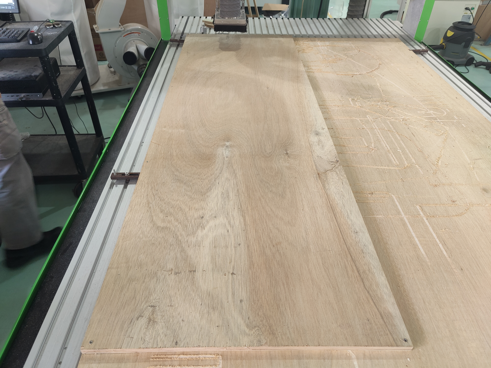

In this segment, we will doing Computer Numerical Control(CNC) with a larger machine. With a larger machine, we are able to use larger stock material and cut out more and larger pieces of material. In this case, the usual thickness and size of ply wood we can use for laser cutting is around 400mmx800mmx3/5mm. But with the big cnc machine, we are able to CNC stock materials of up to 1200mmx700mmx15-25mm.
As per usual, a design will be required before the actual CNC process, in this case, I designed a simple stool that made use of inter-locking joints.

After designing the stool to be cut out of 15mm plywood, I follow on to export the faces as DXF files to prepare them for cutting. From here on, I'll be showing and explaining how to prepare the G-Code with a software called V-carve Pro, which we do not own, so the following pictures were taken off Mr Chew's laptop.
Firstly, we have to import our DXF files via a thumbdrive into V-carve Pro, from then on, we should try to stack them in 1 corner to hasten the CNC process, as well as to reduce wastage of stock material.
After that we will have to put a Dog Bone around areas which we want to interlock with the pieces. This is because the tool bit is spinning without any edges/ its in a shape of a cylinder. So if we just let it cut 90degree angles, it will come out as a fillet/semi-circle instead. So a Dog Bone places in those areas will prevent that from happening and allow interlocking.
Next thing we'll have to do is to set the thickness of the material, the pass depth(normally the diameter of the tool, may subject to changedue to how hard the material is), diameter and type of tool, spindle speed and feed rate and what type of cutting is this.
Next, we will have to put in Tabs at certain area of the cut. Tabs is areas which the machine will by pass when cutting, leaving a thin layer of material left that can be easily removed afterwards. This is to hole the piece in place while its cutting, so there won't be any need of extra work by the user or other weights.
Finally, with everything in place, we can run the stimulation to take a look at the cutting process and wether it cuts fully through. after that, we can export it as G-Code and bring it to the machine.
At the machine, firstly, we have to prepare a sacrifical layer below the stock material. Next, we will bring the stock material over the layer and secure it by drilling wood screws into the corners and edges to secure it on the sacrifical layer.
Next, we will be loading our G-Code onto the machine's software and making sure that everything seems alright. After that, we will have to set XYZ 0. To set XY 0, move the tool bit of the machine to the bottom left corner of the machine, and find a suitable place to place the starting point. For z 0, we will be using the probe and lowering the tool bit until it touches the probe, this will set Z 0 for the machine.

After that, we can run the code, and let the machine do its job. This process is very loud, so ear muffs are recommended. During the process, always stand a safe distance away from the machine and keep close the the emergency stop button on the controller. LIsten out for weird noises that might indicate error in cutting, as well as looking at the chips to see if its cutting correctly. Short Video of CNC process
After the cutting has been completed, we can now proceed to take out the parts fropm the stock material. What we did was using the combintaion of a mallet and a chisel the remove the tabs that was connecting the material from the stock material. We faced the flat siode of the chisel to our parts so to get a clean cut when we hammered down. After removing all the tabs, we were left with our parts.

Next, to make it more pleasing to hold and look at, we used the hand-held sanding machine to remove any left overchips on our parts and also made the edges smoother. After wards, we used files to file down any excess material and assembled. Here's my final product.